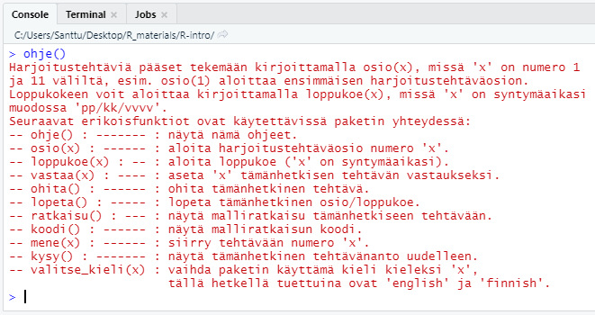

Rcourse-paketin asentaminen
Rcourse-paketti asennetaan suorittamalla seuraava koodi R:ssä. Kopioi koodi joko R-skriptiin ja aja se tai kopioi se suoraan Console-ikkunaan ja paina Enter-näppäintä.
source(url("http://users.jyu.fi/~santikka/Rcourse/install.R"))Tämän jälkeen paketti tulee ladata käyttöön
library(Rcourse)Komento info() tulostaa ohjeet (ensimmäisellä käyttökerralla kieli on englanti). Voit vaihtaa kielen suomeksi näin:
select_language("finnish")Tarkastele vielä suomenkielisiä komentoja:
info()
Aloita sitten osion 1 harjoitustehtävien suorittaminen komennolla
osio1()Kun olet suorittanut harjoitusosion 1, voit jatkaa seuraavaan osioon. Osiot 1-8 ovat pakollisia (tentit kysyvät näiden osioiden sisältöjä) ja osiot 9-11 ovat lisämateriaalia kiinnostuneille (ei kysytä tentissä).
Opiskelu ja tenttiminen Rcourse-paketin avulla
Kurssin harjoitustehtävät suoritetaan käyttäen Rcourse-pakettia, eli 1. osion voi aloittaa komennolla
osio1()Lisäksi tenttimien onnistuu vastaavasti funktiolla loppukoe(x), mutta tällöin merkin x tilalle on annettava oma syntymäaika muodossa dddmmyyyy. Esim. henkilö joka on syntynyt 1. tammikuuta 1990 antaisi
loppukoe(01011990)Tehtävien tallentaminen skripteihin RStudiolla
Suurin osa kurssin tehtävistä on melko lyhyitä, joten ne voi tarvittaessa tehdä suoraan konsoliin. Suosittelen kuitenkin kirjoittamaan varsinkin pidemmät ja monimutkaisemmat tehtävät muistiin editoriin. Suosittelenkin tekemään jokaista osiota varten erillisen R-skriptin, joka sisältää itse tehtävien tarvitseman koodin sekä palautuskomennot. Tällainen skripti näyttää jotakuinkin tältä:
# Teht 1
vast <- 1
tarkista(vast)
# Teht 2
vast <- c(1, 2, 3)
tarkista(vast)
# Teht 3
vast <- "jotain"
tarkista(vast)Mikäli käytät nimen vast sijasta jotain muuta nimeä, niin sinun on käytettävä samaa nimä myös tarkista-funktion argumenttina!